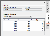
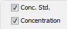

Concentration
Use this option to assign features as concentration standards that will be used to calculate unknown concentrations of other features.
A relationship between concentration standards (added to a table) and a measured quantification value (chosen in the Concentration panel) will be determined and used to assess unknown concentrations.
To assign concentration standards and determine unknown concentrations:
-
Click the Concentration tab at the right side of the window to display the Concentration panel.

 Choose the desired interpolation method, quantification value, and channel in the Concentration panel...
Choose the desired interpolation method, quantification value, and channel in the Concentration panel...
-
Interpolation Method list - Choose the interpolation type used to calculate a relationship between the concentration standard values you enter and the measured signal.
Linear - A linear relationship, y = mx + b, will be determined between the entered concentration standards and the quantification value chosen in the Column list, then used to calculate unknown concentrations.
Log - A logarithmic relationship, y = ln(x), will be determined between the entered concentration standards and the quantification value chosen in the Column list, then used to calculate unknown concentrations.
Reciprocal fit - An inverse relationship, y = 1/x, will be determined between the entered concentration standards and the quantification value chosen in the Column list, then used to calculate unknown concentrations.
Exponential - An exponential relationship, y = x^n, will be determined between the entered concentration standards and the quantification value chosen in the Column list, then used to calculate unknown concentrations.
- Column - Choose the quantification value that Image Studio Software will use to determine the relationship between entered concentration standards and measured signal. See Calculation Descriptions for more detail about each quantification value. This value will appear in the Chart panel table next to the concentration standard values.
- Channel - Choose the channel that contains the concentration standards you would like to appear in the Chart panel table next to the concentration value.
-
-
Click the tab at the top of the Table section to open the table with the features to be assigned as Concentration Standards. In the example below, the Plate Wells table is selected.
-
Add the Conc. Std. and Concentration columns to the table...
- Click Columns
 at the top right of the Table section to open the Columns dialog.
at the top right of the Table section to open the Columns dialog. -
Check the boxes next to Conc. Std. and Concentration.

-
Click Save.
The Conc. Std. and Concentration columns will be added to the far right of the table.
- Click Columns
- Click a concentration standard feature or select its row in the table.
-
Double click the Conc. Std. field in the selected row.
-
Enter the concentration value for this feature.
The assigned concentration standard will appear in the Concentration panel table.
NOTE: Ensure the values of the entered standards increase or decrease consistently with the quantification value chosen in the Concentration panel.
- Repeat steps 4 through 6 to add all of the concentration standards to the list.
- The calculated concentrations for the other features appear in the table in the Concentration column.
{kind=link}
{kind=link}
NOTE: Concentration standards can only be added to one channel at a time. Check that the highlighted row is in the correct channel.